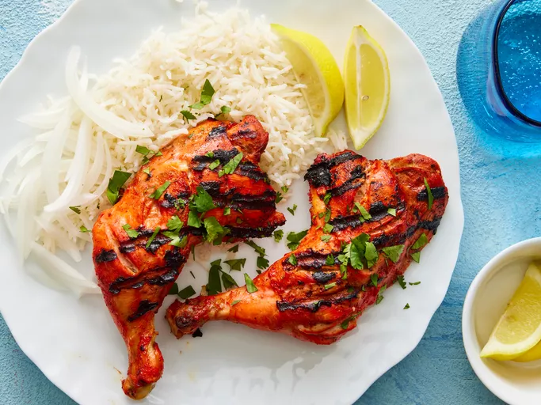

Tandoori Chicken

Description
Try this authentic tandoori chicken that's marinated in yogurt and spices, then cooked on the grill instead of a clay oven so you can make it at home. Serve with long-grain basmati rice, grilled veggies, roasted corn on the cob, and a cucumber salad.
Ingredients
- 2 Pounds Chicken, Cut into Pieces
- 1 Medium Lemon, Juiced
- 1 Teaspoon Salt
- 1 ¼ Cups Plain Yogurt
- ½ Medium Onion, Finely Chopped
- 1 Clove Garlic, Minced
- 2 Teaspoons Garam Masala
- 1 Teaspoon Grated Fresh Ginger Root
- 1 Teaspoon Cayenne Pepper
- 1 Teaspoon Red Food Coloring (Optional)
- 1 Teaspoon Yellow Food Coloring (Optional)
- 2 Teaspoons Finely Chopped Cilantro
- 1 Medium Lemon, Cut into Wedges
Steps
- Gather the ingredients.
- Remove and discard skin from chicken pieces. Cut slits into meat and place into a shallow dish. Season chicken on both sides with lemon juice and salt. Let sit for 20 minutes.
- Mix yogurt, onion, garlic, garam masala, ginger, and cayenne pepper together in a medium bowl until smooth, then stir in food coloring.
- Spread yogurt mixture over chicken, cover, and refrigerate for 6 to 24 hours (the longer the better).
- When ready to cook, preheat an outdoor grill for medium-high heat and lightly oil the grate. Remove chicken from marinade. Discard remaining marinade.
- Cook chicken on the preheated grill until no longer pink and the juices run clear. An instant-read thermometer inserted near the bone should read 165 degrees F (74 degrees C).
- Garnish with cilantro and lemon wedges.
Return